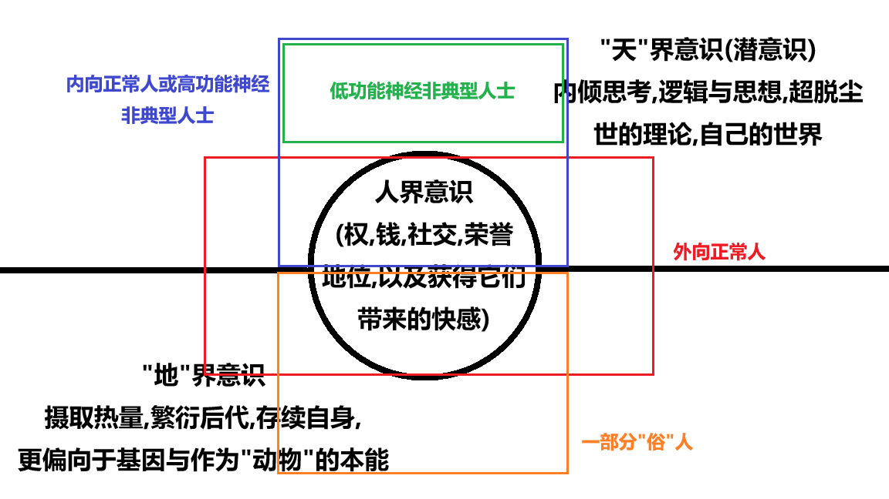

☯️🧬霊狐製作所 公式ツイッター🏳️⚧️
@Cheese_Ghostfox
同时这也解释了所谓"I"人与"E"人的区别所在,更在乎社交同时拥有更强社交能力的E人即为作为常人的20%表层意识占比更高者.而I人们则更偏向于离人更远而离高维意识更近的趋向(这会导致社交欲望低迷与社交能力缺失)

☯️🧬霊狐製作所 公式ツイッター🏳️⚧️
@Cheese_Ghostfox
一个简单易懂的水管模型来叙述(下附图)
中间代表"人"界意识的水管在您的眼前占比越低,相当于您越发偏离于"常人"基准轴,这并不一定是坏事,但可能导致语言组织功能下降等,同时中间的那根水管也代表与人交往的欲望与能力,越偏离也就越会难以社交(离神还有一定距离,但是离人已经很远了) https://t.co/O26oGfvE8Y